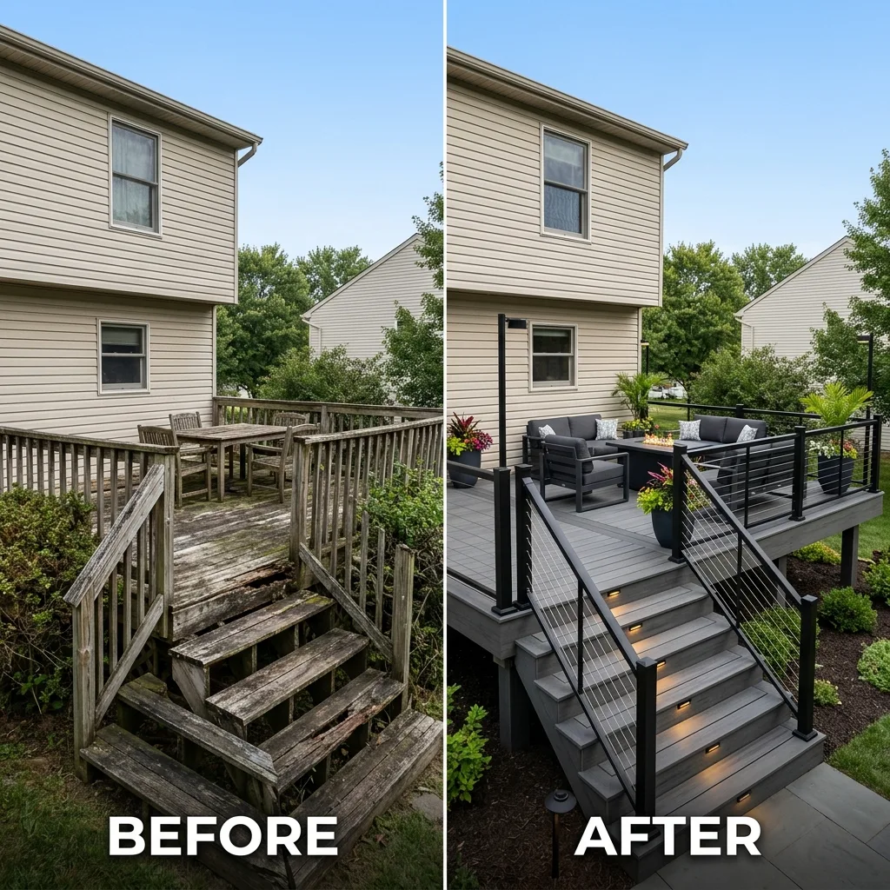

We tear out old, rotting decks and replace them with modern, low-maintenance composite.
WHEN TO REPLACE
Is your deck showing its age?
Wood decks in New England take a beating. Harsh winters, humid summers, and constant moisture cause boards to split, nails to pop, and railings to loosen. If your deck feels soft, bouncy, or looks worn out, it may be time for a full replacement.
We do not just throw new boards on top of old rot. We inspect every joist, beam, and footing. If something is failing, we replace it. If the framing is solid, we save you money and build on top of what is already there.
SEE THE TRANSFORMATION
Before & After Slider
Use the slider handle below to see the transition from weathered wood to modern composite.

Before
After
HOW WE BUILD IT
Structural standards we follow on every job
A deck replacement is not just cosmetic. We follow Massachusetts building codes and use commercial-grade materials so your new deck is safe, level, and built to last.
Structural Assessment: We inspect the existing footings, ledger board connection, and framing to ensure they are 100% sound and level before building.
Premium Framing & Ledger Protection: We use heavy-duty joist hangers, structural screws (no nails in framing connections), and advanced flashing membranes to prevent water damage to your home.
Low-Maintenance Upgrades: By replacing wood with high-end capped composites (like TimberTech and Azek), we eliminate the need for sanding, staining, and sealing forever.
REAL RESULTS
Completed Transformations
Here are some of our recent complete deck replacement projects across local Massachusetts towns.
Side Entry Deck & Stairs
Hopkinton, MA
Elevated Deck Replacement
Bellingham, MA
Suburban Deck Remodel
Bellingham, MA
FAQ
Common Questions About Deck Replacement
Possibly, but only if the framing is 100% code-compliant, structurally sound, and free of rot. During our initial site consultation, we perform a thorough inspection of your joists, beams, and concrete footings. If they are in excellent shape, we can "re-skin" the deck with new composite boards, saving you substantial cost.
Key warning signs include wobbly railings, wood that feels soft or crumbles when pressed with a screwdriver, sagging joists, rusty connectors, and a ledger board (the wood that attaches the deck to your house) that is pulling away or has no visible structural bolts.
Yes. Almost all towns in Massachusetts require a building permit for deck replacement. This ensures that the structural framing, concrete footings, and safety railings meet current building codes. We handle the entire application and inspection process for you.
Ready to replace your old deck?
Get in touch to talk about your project and schedule an on-site estimate.